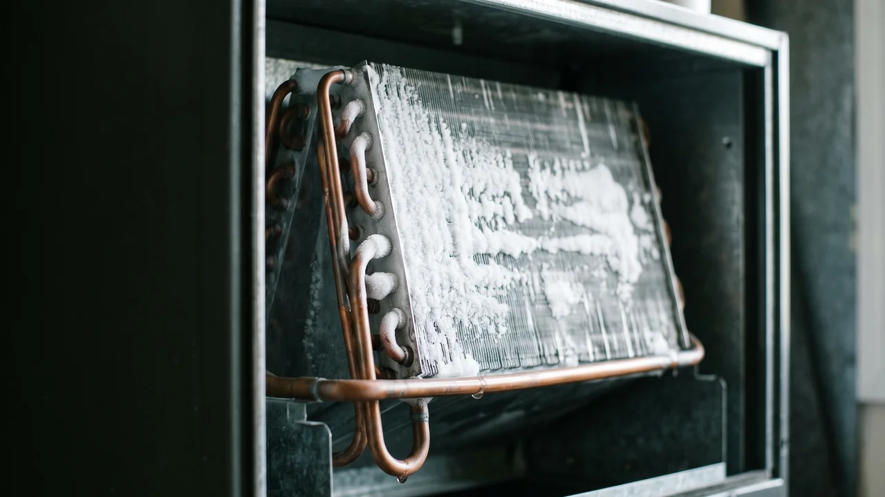

Advertising Disclosure: This site may receive compensation for service connections made through this page. Content is editorially independent.
Turn the thermostat to OFF, switch the fan to ON to circulate warm air across the frozen coil, and wait 2 to 4 hours for full thawing. While you wait, replace the air filter and open every supply register and return grille. If the coil freezes again within 24 hours of restart, you likely have a refrigerant leak or a failing blower motor — stop running the system and call a technician. Do not chip the ice, do not pour hot water on the coil, and do not run the AC while it is frozen. A compressor damaged by running against ice costs $900 to $2,800 to replace.
Before you open any access panel on the indoor air handler to look at the coil or the blower, switch the AC off at the thermostat AND flip the breakers for the indoor air handler and the outdoor unit at your electrical panel. HVAC systems run on 240 volts, and capacitors store a dangerous charge even after power is cut. If you are not comfortable around electrical components, skip the internal inspection and go straight to calling a technician. No DIY check is worth an injury.
The 30-Second Fix: What to Do Right Now
When you see ice on the copper refrigerant lines near your indoor air handler — or water pooling on the floor from a thawed coil — do these three steps in order:
- Set the thermostat to OFF. Not "higher temperature," not "auto" — completely off. This stops the compressor from pumping refrigerant against a blocked coil.
- Switch the fan setting from AUTO to ON. This keeps the blower running while the compressor is off, pushing warmer indoor air across the frozen coil to thaw it faster and more evenly.
- Wait 2 to 4 hours. A light ice layer thaws quickly. A thick block of ice that has been building for days can take 12 to 24 hours. Place an old towel under the air handler to catch meltwater, because there can be a lot of it.
Do not touch the ice. Do not apply heat with a hair dryer, heat gun, or hot water — thermal shock can crack the aluminum fins and stress the copper lines, and a cracked refrigerant circuit is a much more expensive repair than waiting. Do not restart the system during thawing. Once the coil is fully thawed and dry, then move to the causes below.
Why Your AC Is Freezing: The 5 Root Causes
A residential evaporator coil freezes when its surface temperature drops below 32°F while humid air still passes over it. The moisture in that air condenses and then freezes. Every root cause of a frozen AC traces back to one of two underlying problems: airflow is too low or refrigerant charge is too low. Here are the five specific failure modes behind those conditions.
1. Clogged Air Filter (Most Common)
A dirty filter restricts the volume of warm indoor air reaching the coil. With less heat to absorb, the coil surface cools below freezing and condensation turns to frost. This is the single most frequent cause of frozen AC calls in summer, and the fix is the cheapest one in HVAC: a $15 to $35 replacement filter. Hold your filter up to a light source — if you cannot see light through it, it is overdue.
2. Low Refrigerant Charge (Leak)
Refrigerant is not consumed in normal operation. A closed sealed system holds its charge for the life of the equipment. If the charge is low, there is a leak. Low charge drops evaporator pressure, which drops coil surface temperature below freezing even with normal airflow. The leak must be located and repaired, and the system recharged — all of which require a certified technician. Under EPA Section 608, refrigerant handling is restricted to certified professionals. A refrigerant recharge without a leak search is a temporary fix that will fail again within weeks.
3. Dirty Evaporator Coil
Years of dust and biofilm on the indoor coil insulate it from the air passing across it. The surface cools more than it should for the same refrigerant conditions, and ice forms. Coil cleaning is a technician job — the coil sits behind the access panel of the air handler and requires coil cleaner, a fin comb, and in some cases full chemical cleaning with the coil removed. This is not a DIY task.
4. Failed Blower Motor or Blocked Returns
If the blower motor is weak or failing, the air volume across the coil drops and freezing starts for the same reason as a dirty filter. A visual check: confirm you feel strong, steady airflow at multiple supply registers throughout the house. If airflow is weak even with a fresh filter and all registers open, the blower motor or the ductwork has a problem that requires diagnosis.
5. Outdoor Temperature Below 60°F
Standard residential AC systems are designed to operate with outdoor temperatures at or above roughly 65°F. If the AC runs on a cool summer night or early morning when the outdoor temperature drops into the 50s, the low-side refrigerant pressure can fall far enough to push coil surface temperature below freezing. This is rarely a root cause in hot-summer climates like Tampa or Tucson, but it comes up in the shoulder seasons and in homes with aggressive night setpoints.
Less common: a stuck or failing metering device (TXV — thermostatic expansion valve) can also cause freezing by restricting refrigerant flow into the coil. This is a technician diagnosis only.
Get connected with a technician in your ZIP code.
Call Now — (844) 582-1795Disclosure: We are a referral service and may receive compensation for qualified calls. Calls may be routed to an independent provider network and may be recorded. Pricing and availability vary by provider and location.
What You Can Safely Check Yourself
Only the following checks are safe for a homeowner. Every one of them can be done without opening an electrical panel or touching a refrigerant component.
- Replace the air filter. Slide it out of the return grille or the filter cabinet, check the arrow for airflow direction, and insert a new filter of the same nominal size and MERV rating. No tools needed.
- Open every supply register and return grille. Walk the house. Closed or blocked registers create pressure imbalances that starve the coil of airflow.
- Clear the area around the outdoor condenser. Pull back any grass, leaves, or stored items. The outdoor unit needs at least 2 feet of clearance on every side for heat rejection — a choked condenser puts extra load on the sealed system that can contribute to freezing.
- Flush the condensate drain line. The indoor coil produces gallons of condensation during normal summer operation. A clogged drain cannot keep up, water backs up, and in some systems a float switch will shut the system off. Find the PVC drain line exiting the air handler, remove the cleanout cap, and pour a cup of distilled white vinegar down the line to kill algae. For active clogs, a wet-vac on the outdoor end of the line usually clears the blockage.
That is the complete safe DIY list for a frozen AC. Anything beyond this — checking refrigerant pressure, cleaning the indoor coil, testing the blower motor, opening the electrical service panel, working on the outdoor unit beyond clearing debris — is a technician task. The most common mistake homeowners make is trying to "help" the system by speeding up thawing or topping off the refrigerant. Both can turn a $200 repair into a $2,500 one.
When to Stop and Call a Technician
Stop DIY and call a professional when any of these conditions are true:
- The coil refreezes within 24 hours of a fresh filter and restart. This strongly suggests a refrigerant leak or blower problem.
- You see ice on the large copper refrigerant line running from the outdoor unit into the house, not just on the indoor coil. Line frost usually means low refrigerant charge.
- You hear a hissing sound near the indoor unit or the refrigerant lines. That is the signature of a pressurized refrigerant leak.
- You see oily residue on or near any copper line joint. Refrigerant oil follows a leak.
- The system is making water that overflows the drain pan despite a cleared drain line.
- Airflow from every register is weak even after a new filter and open grilles. Likely a blower motor issue.
- The system is older than 10 years and has had multiple freeze events. Compounded problems are common at that age.
For the full walkthrough of every AC failure mode and how they connect, see our complete AC troubleshooting guide. For a related failure — refrigerant leaks that cause ice on the lines — read our guide on why refrigerant leaks make AC ice a growing problem. For a frozen coil that has already thawed and is now causing water damage indoors, see how to stop HVAC water leaks before they ruin drywall and flooring.
What a Technician Will Actually Check
Knowing what a thorough diagnosis looks like helps you tell a careful technician apart from a hurried upsell:
- Refrigerant pressure readings. Gauges on the suction and liquid service ports read high-side and low-side pressure. Abnormal readings point to leak, blockage, or metering device failure.
- Superheat and subcooling measurements. These are the two numbers that actually tell a tech whether the charge is correct, rather than simply "adding refrigerant until it stops freezing."
- Leak detection. UV dye added to the refrigerant, an electronic refrigerant sniffer, or a pressure decay test will isolate the leak site. Any technician who recommends a recharge without leak detection is cutting corners.
- Airflow measurement. Static pressure readings in the ductwork, blower motor amperage draw, and supply-return temperature differential — a healthy system drops air temperature 15 to 20°F from return to supply.
- Evaporator coil inspection. Dust and biofilm buildup on the coil fins, condensate drain pan condition, and aluminum fin bending from prior cleaning attempts.
A technician who skips the pressure readings and jumps straight to "you need a new compressor" or "you need a coil replacement" without showing you the numbers is waving a red flag. Ask to see the gauges and the multimeter readings. If you want to understand common quote inflation patterns before that conversation, read our honest 2026 HVAC cost guide.
What Repairs Cost in 2026
Pricing on this site is anchored to our complete 2026 HVAC Cost Guide, which is the single source of truth for every cost figure — no drift between articles.
- Diagnostic / service call: $65–$150 (often credited toward the repair if approved)
- Refrigerant recharge (R-410A): $150–$600
- Refrigerant leak repair (including search and recharge): $200–$1,200
- Blower motor replacement: $300–$700
- Evaporator coil replacement: $600–$2,000
- Emergency / after-hours surcharge: $100–$300 added
Estimated ranges based on publicly available industry data and in sync with our complete cost guide. Actual costs vary by region, provider, and system.
Climate Matters: Where AC Freezing Shows Up Most
Hot-humid climates (Tampa, Tallahassee, New Orleans, the Gulf Coast): High humidity means more condensation on the coil in normal operation, which means more ice when anything restricts airflow. Condensate drain clogs from algae growth are common — flush the drain line with vinegar twice per summer to prevent the slow leak that eventually triggers a float-switch shutdown.
Hot-dry climates (Tucson, Phoenix, Las Vegas): Freezing is less common but still happens, usually from dust-choked evaporator coils and aggressive night setpoints that cycle the compressor while outdoor air is cooler. Annual coil inspection is higher-value here than in humid climates.
Mixed-humid climates (Atlanta, Charlotte, Nashville): The most variable failure pattern — shoulder-season freeze events on cool May and September nights, then heavy-load freeze events on peak July and August afternoons. Both types show up. Browse local service providers in Florida, Arizona, or explore all service areas.
Trusted Industry Sources
The guidance in this article is consistent with published recommendations from:
- U.S. Department of Energy — Central Air Conditioning
- EPA Section 608 Refrigerant Handling Regulations
- ENERGY STAR Heating & Cooling
Don't wait — get a technician dispatched to your area.
Call Now — (844) 582-1795Disclosure: We are a referral service and may receive compensation for qualified calls. Calls may be routed to an independent provider network and may be recorded. Pricing and availability vary by provider and location.
Frequently Asked Questions
The evaporator coil freezes when its surface temperature drops below 32°F while humid indoor air still flows across it. That happens for one of two reasons: restricted airflow (dirty filter, closed returns, dirty coil, failed blower motor) or low refrigerant charge (always caused by a leak, since refrigerant is not consumed in normal operation). Secondary causes include a stuck metering device (TXV) or running the AC when outdoor temperatures drop below roughly 60°F.
A typical light-to-moderate ice buildup takes 2 to 4 hours to thaw with the system set to OFF and the fan switch set to ON, which circulates warmer indoor air across the coil. Severe ice buildup — a block of ice that has been forming for several days — can take 12 to 24 hours. Do not try to speed up thawing with a hair dryer, hot water, or a heat gun. Fast temperature changes can crack the aluminum coil fins or stress the copper refrigerant lines.
No. Thermal shock from hot water on freezing-cold copper and aluminum can crack the refrigerant circuit and bend the coil fins. A cracked refrigerant line is a much more expensive repair than waiting out the thaw. Stick to the safe method: thermostat OFF, fan switch ON, wait 2 to 4 hours, and place a towel under the air handler to catch meltwater.
Running a frozen AC forces the compressor to pump refrigerant through a system that cannot exchange heat. That causes liquid refrigerant to return to the compressor instead of vapor — a condition called "slugging" — which can damage the compressor's internal valves and bearings. A compressor replacement costs $900 to $2,800 installed. A frozen coil is a warning sign, not a symptom to push through. Shut the system off immediately.
No. The most common cause of a frozen AC is a clogged air filter, not low refrigerant. Replace the filter, let the system thaw fully, and restart. If the coil freezes again within 24 hours, refrigerant loss from a leak is the likely cause and a technician will need to find and repair the leak. Under EPA Section 608, only a certified technician can legally handle refrigerant — refrigerant recharge is never a homeowner task.
If the cause is a dirty filter, the fix is a $15 to $35 filter and no service call. If a technician is needed, expect a diagnostic fee of $65 to $150, a refrigerant recharge (when the issue is a leak) at $150 to $600, leak repair at $200 to $1,200, blower motor replacement at $300 to $700, or evaporator coil replacement at $600 to $2,000. See our full HVAC Cost Guide for the complete 2026 pricing breakdown.
Local HVAC Service Areas
Cool Call Pro connects homeowners with independent HVAC technicians nationwide. Find a pro in Tallahassee (FL), Tampa (FL), Tucson (AZ), or Atlanta (GA), or browse by state: Florida, Arizona, or all locations.